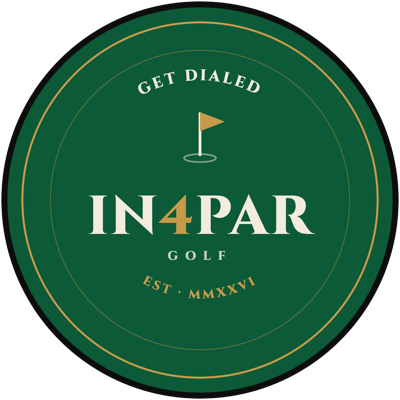

A GoFundMe campaign for a bust of the founder of the National Black Golf Hall of Fame. It runs January 1 to August 31, 2027, with a public push at the PGA Show in Orlando.
| Item | Plan |
|---|---|
| Goal | $30,000 for the gypsum bust, delivered and unveiled. Stretch goal of $52,500 to cast it in bronze. |
| Headline ask | 300 people at $100, plus one lead sponsor |
| Sculptor's quote | $20,000 gypsum / $40,000 bronze (list price $35,000 / $60,000), similar in size to the William Powell bust |
| Home | The Hall of Fame's first permanent home, the new clubhouse at John A. White Golf Course in Atlanta, opening late 2027 [Jeff to confirm] |
| Beneficiary | National Black Golf Hall of Fame, 501(c)(3), Tax ID 26-2420132. Gifts are tax-deductible. |
| Organizers | John Simpson and Ian Saunders, with Jeff Dunovant as a team member |
| Runs | January 1 to August 31, 2027 |
| Cover video | Jeff's Titleist reel by Thomas (@thomasformanjr), cut to 90 seconds, credited |
In 1986, Harold Dunovant made sure Black golf would be remembered.
He saw that the players, builders and pioneers who carried Black golf through segregation were going unrecorded. So he started a record of his own: the National Black Golf Hall of Fame. Forty years later, that record holds more than 160 names, and it is still growing.
In [1963], Harold became the first Black golf professional to manage a golf course for the City of New York, at Kissena Park in Queens. He owned the golf shop and bought every piece of merchandise himself. One company would sell to him: Titleist.
Harold was the first Black graduate of the PGA Business School. He and his son Jeff are the only Black father and son to both be PGA members. Jeff carries his father's work forward today as General Manager of John A. White Golf Course in Atlanta.
Now we want to give Harold his due.
We are commissioning a bust of Harold Dunovant by [sculptor]. It will stand in the Hall of Fame's first permanent home, the new clubhouse at John A. White Golf Course, and be unveiled [at the clubhouse opening / at the 2027 induction] in front of the family, the inductees and the community he built.
It will be a companion to the bust honoring William Powell, who built Clearview Golf Club in 1946. The two founders belong side by side.
Our goal: 300 people at $100. Every $100 donor's name goes on the Founders Circle roll beside the bust.
"Titleist was the only company that gave my dad an opportunity to feed me, my mom, my brothers. Where would I be today? I don't think I would be playing golf without my dad. My dad showed me everything about the game and how to play the game."
Jeff Dunovant, Harold's son, PGA member and General Manager of John A. White Golf Course
Donors see this table on the page. Every est. line gets a real number before launch.
| Item | $30,000 goal (gypsum) | $52,500 stretch (bronze) |
|---|---|---|
| Sculpture | $20,000 | $40,000 |
| Display base and pedestal | $2,000 est. | $2,000 est. |
| Shipping and insurance | $1,500 est. | $2,000 est. |
| Unveiling | $1,000 est. | $1,000 est. |
| Campaign management and promotion (5%) | $1,500 | $2,625 |
| Card processing (2.9% + 30¢ per gift) | about $1,000 | about $1,650 |
| Contingency | $3,000 | $3,225 |
| Total | $30,000 | $52,500 |
How the stretch works: once the $30,000 is in, the gypsum bust is funded. Everything above that goes toward casting it in bronze. If we finish short of $52,500, the extra funds go to the Hall's work recording inductee histories [or are held for a later bronze casting].
| Gift | Level | Recognition |
|---|---|---|
| $25+ | Supporter | Thank-you from the family and an invitation to the virtual unveiling |
| $40+ | 40 Years | For the Hall's 40 years. Supporter, plus your name on the digital Founders roll at blackgolfhof.org |
| $100+ | Founders Circle | Your name on the Founders Circle roll beside the bust [format set by Jeff's room drawings] |
| $500+ | Champions | Founders Circle, plus a named seat at the unveiling |
| $1,000+ | Legacy | Champions, plus your name in larger type and a photo with the bust |
The roll has to be easy to produce and update, so its format waits on the interior drawings of the new clubhouse that Jeff is sending.
| Gift | Grassroots only | With a lead sponsor |
|---|---|---|
| Lead sponsor | none | 1 × $10,000 |
| $2,500 partners | none | 2 × $2,500 |
| Legacy $1,000 | 5 | 4 |
| Champions $500 | 10 | 8 |
| Founders Circle $100 | 150 | 50 |
| 40 Years $40 | 100 | 40 |
| Supporter $25 | 40 | 20 |
| Donors / total | 305 / $30,000 | 125 / $30,100 |
A lead sponsor cuts the number of individual donors we need by more than half. That's why the Titleist conversation matters.
Audience numbers were checked on November 1, 2026 from public pages and publishers' own figures. Reach rates are industry averages: 3–5% of followers per Instagram post and about 1.5% per Facebook post (Socialinsider, 2026). Donor counts are planning estimates.
| Channel | Audience | What we do | Est. eyeballs | Est. donors |
|---|---|---|---|---|
| NBGHF Instagram @blackgolfhof | 1,767 followers | 2 posts a week, mostly Reels from the approved videos | 5,000 | 5 |
| NBGHF Facebook | [count] | The same posts, plus shares into golf groups | 2,000–5,000 | 5 |
| Partner Instagram: @johnawhitegc, @bobbyjoneslinks, @thomasformanjr | 9,429 followers combined | Collab posts at launch, the PGA Show, February, the clay model and the final 30 days | 2,000–6,000 | 5 |
| African American Golfer's Digest | 20,000 print; publisher reports 80,000+ readers | A feature, an ad, and posts on their channels | 20,000–80,000 | 20–40 |
| PGA Show, Orlando, Jan 26–29 | 34,000 attendees (2026) | The table: video loop, QR code, flyers, membership and merchandise | 1,000–2,000 at the table | 25–50 |
| Email to Hall members and past donors | 125+ members [+ list size] | 8 emails over the campaign | 1,000+ sends | 15–25 |
| Personal asks by text and call | about 250 people | John, Ian, Jeff and two board members each text 50 people the video and link | 250 | 75–100 |
| Paid boost (optional, $500) | Golf and Black history audiences in Atlanta, New York, DC and Florida | Boosted Reels during launch, February and the final 30 days | 40,000–60,000 | 20–40 |
| Total | about 70,000–160,000 | about 170–270 |
What this tells us. The Hall's own social following is small, so most of the eyeballs come from the AA Golfers Digest, the PGA Show and a paid boost. Most of the donors come from personal asks and email. The plan gets to about 170–270 donors. With a lead sponsor we need 125, so we're covered. Without one we need about 305, which means more personal asks or a second media partner. Not counted here: anything Titleist, Golf Channel or the Uihlein family shares, which is the upside.
NBGHF has no TikTok or YouTube Shorts presence we could find. Either the Hall opens accounts and cross-posts the Reels, or partners post them.
| When | Focus | Pieces |
|---|---|---|
| December | Quiet build | Videos approved and credited, page built, tracked links and QR codes ready, AA Golfers Digest feature booked |
| Jan 1–7 | Launch | Personal asks go out first so the page shows momentum, then the launch post, Reel and email 1 |
| Jan 26–29 | PGA Show | Daily posts from the table, the QR code on every flyer, and a "we were there" recap email |
| February | Black History Month | One story a week: Kissena Park and Titleist, the PGA Business School, father and son, the Hall's founding in 1986 |
| April | Masters week | A founders post: Harold beside William Powell |
| [Month] | Clay model | First look photos and video, and an email to donors |
| Halfway | Momentum | Donor count update and a thank-you Reel |
| August | Final 30 days | Countdown, a push for the bronze stretch goal, closing August 31 |
We approach these in order. Nothing goes to Titleist without Jeff's blessing.
| # | Who | Ask | Through |
|---|---|---|---|
| 1 | Titleist | Lead sponsor: a check (target $10,000), plus an endorsement and a share of the story on Titleist channels. Harold's Kissena story is Titleist's own history. | Jeff only, when he's ready |
| 2 | Uihlein family | A short endorsement video from Wally Uihlein's son or daughter asking people to give, in the style of Gary Player's | John |
| 3 | Bobby Jones Links / John A. White | Partner sponsor ($2,500), a host for the unveiling, and posts on course channels | Jeff |
| 4 | African American Golfer's Digest | Media partner: a feature and ads across print, web and social | John, with Debert |
| 5 | Golf Channel / Damon Hack | Permission to use the 2023 feature, and a mention or follow-up piece | John |
| 6 | Clearview / Renee Powell | Co-promotion of the two founders' busts | John |
| Piece | Length | Status |
|---|---|---|
| Harold Dunovant Bust Reel: Jeff's Titleist story | 97 sec | Done, with credits for @thomasformanjr and @johnawhitegc. Needs Jeff's OK. |
| Father. Son. Home.: Golf Channel feature, Titleist reel and new-home clip | 84 sec | Draft with credits. Golf Channel and Bobby Jones Links have to clear the footage before public use. |
| Uihlein endorsement | 30–60 sec | John is reaching out |
| Short cuts (15 and 30 sec) for paid and organic posts | 15/30 sec | Built from the approved reels after Jeff's OK |
| When | Milestone |
|---|---|
| Week of Nov 2 | John reviews this draft and takes it to Jeff |
| November | Jeff's OK, written quote from the sculptor, location confirmed, sponsor list finalized |
| December | Sponsor conversations, video credits and cuts, GoFundMe page built (unpublished), tracked links and QR codes ready |
| January 1, 2027 | Campaign opens to the Hall's members and close network first |
| January 26–29 | PGA Show, Orlando: bust campaign, associate memberships and merchandise at one table |
| February | Black History Month push with Harold's story |
| [Month] | Clay model first look shared with donors |
| August 31, 2027 | Campaign closes |
| [Date] | Unveiling at the new clubhouse |